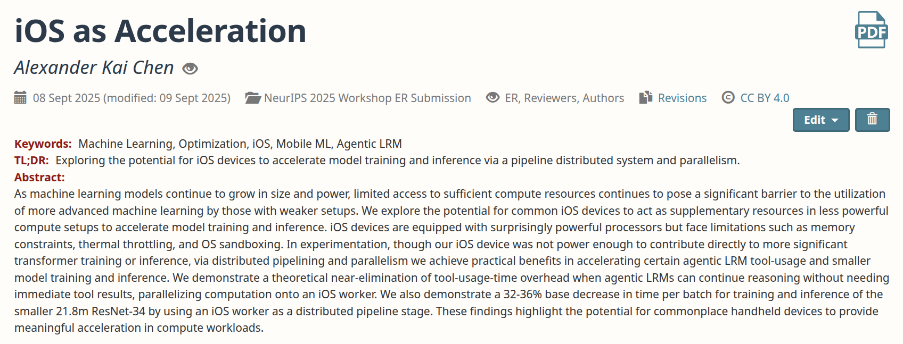

09/23/2025
I'm excited to share that my first research paper was accepted into a NeurIPS 2025 workshop!
As a highschooler, this is such an amazing opportunity for me to engage directly with the AI research community.
My solo paper, "iOS as Acceleration", was accepted into the NeurIPS 2025 Workshop on Efficient Reasoning. In my paper, we explore the potential for commonplace mobile devices to accelerate machine learning tasks by parallelizing compute onto their hardware, lowering the barrier for entry into the field and enabling those restricted to weaker compute setups to utilize more powerful AI by simply "plugging in" their phones.
A big thanks to workshop organizers and reviewers for hosting and providing valuable feedback, and looking forward to engaging with the community in San Diego!
As a highschooler, this is such an amazing opportunity for me to engage directly with the AI research community.
My solo paper, "iOS as Acceleration", was accepted into the NeurIPS 2025 Workshop on Efficient Reasoning. In my paper, we explore the potential for commonplace mobile devices to accelerate machine learning tasks by parallelizing compute onto their hardware, lowering the barrier for entry into the field and enabling those restricted to weaker compute setups to utilize more powerful AI by simply "plugging in" their phones.
A big thanks to workshop organizers and reviewers for hosting and providing valuable feedback, and looking forward to engaging with the community in San Diego!
